k-Day 117｜98%的自由
起床時小朋友們都還在睡，老闆已經開店做生意了。
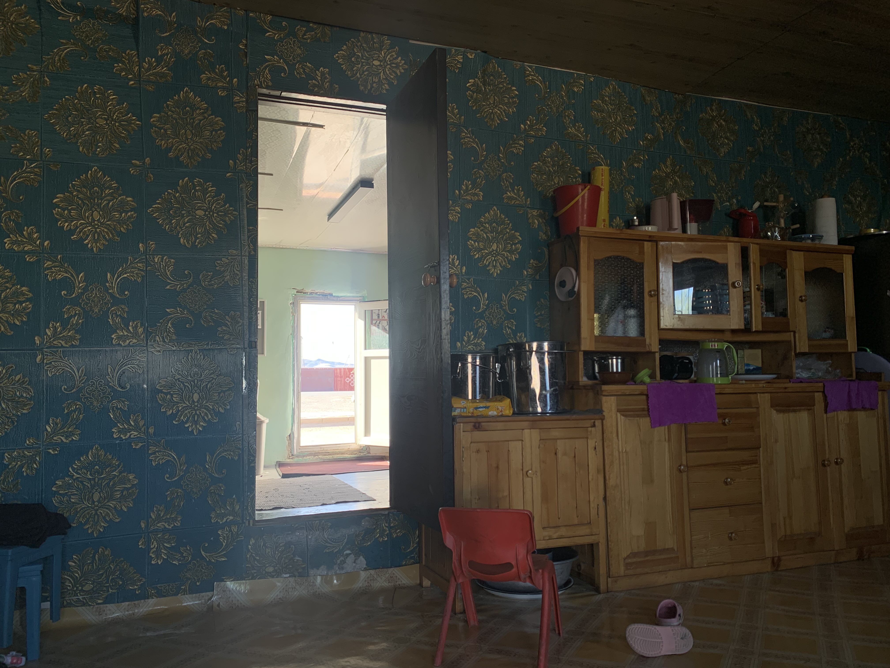
從剛到蒙古時接受路人的幫助、睡在火車站大廳，接下來被店員帶回蒙古包、被接納進入各種商店院子，到前天在蒙古包大吃大喝睡到斷片，此刻躺在商店後面的起居間。
躺在地上看著外面的商店，商店門口透入戶外光線。原本繞著城鎮都找不到的隱蔽超市，曾經好奇商店的小門後面是怎樣的世界，好長的兩個月。
收拾裝備後在門口向老闆道別，拿出一瓶新的鏈條油請老闆轉交給還在睡覺的其木格。
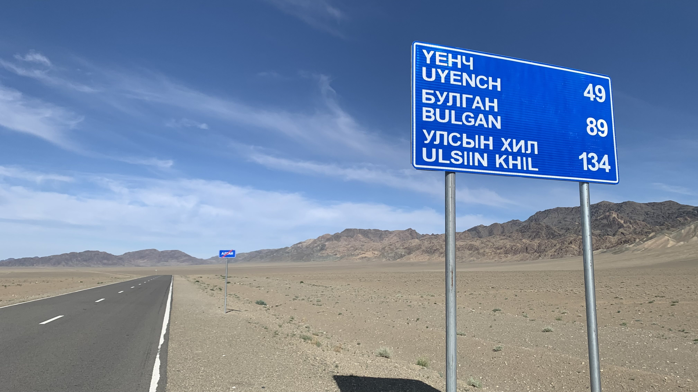
距離口岸只剩140公里，一個半月的逆風和令人絕望的地平線頓時有了盡頭。
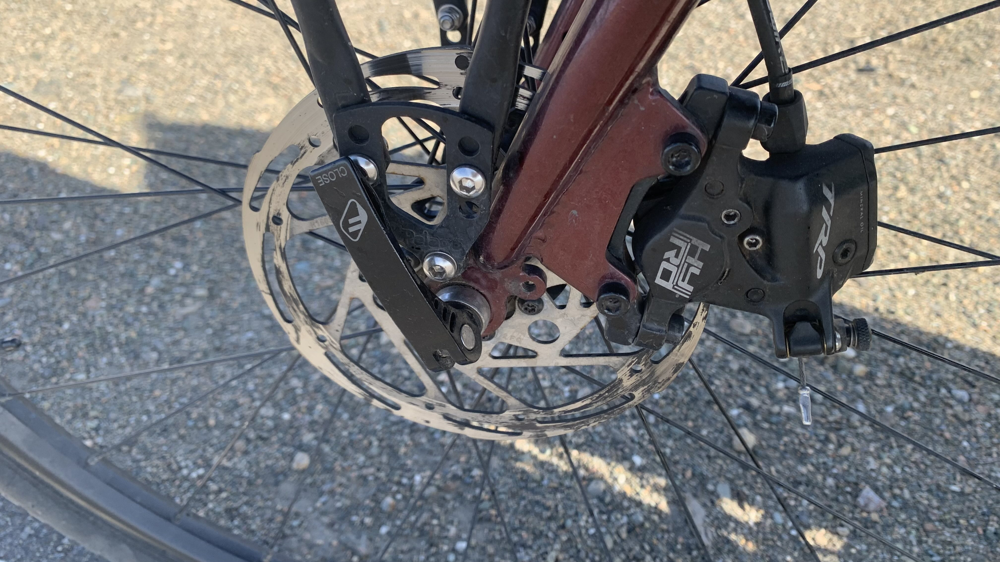
碟盤似乎沾到油污，煞車時出現巨大的金屬摩擦聲，按到底還是煞不住。
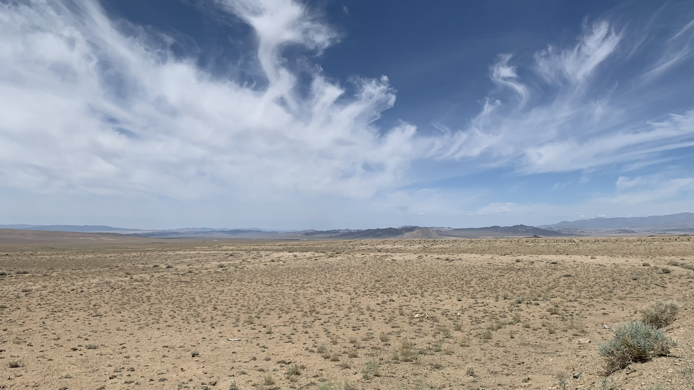
早上十點半，在沙漠裡騎了三十公里左右，手機突然接收到網路訊號。自從離開曼罕市區，手機就呈現斷網狀態。趕緊停下車站在路肩，點開Line訊息，看到母親的問候：
「早安。吃好，睡好，沿途有特色咖啡店嗎」
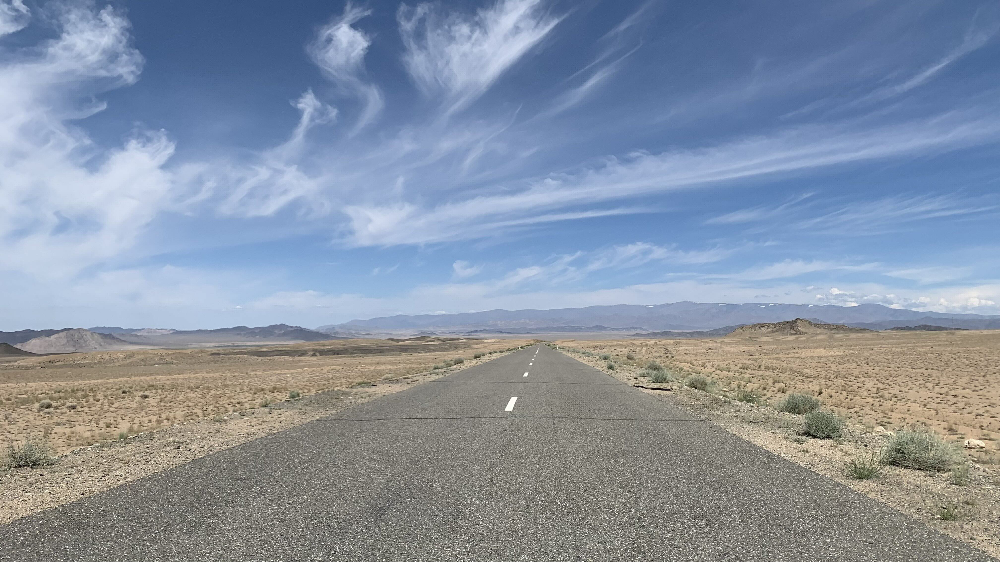
看看眼前一片荒蕪，再低頭看了一眼訊息，回憶過去一週的人生，在沖積扇沙地推車、在河床扎營、跟著馬群在山谷裡躲風、被風吹到動不了，花了四天時間下山，整個早上在沙漠裡即將被曬乾......。眼前風越來越大，決定騎到十公里外的涼亭自己煮咖啡。
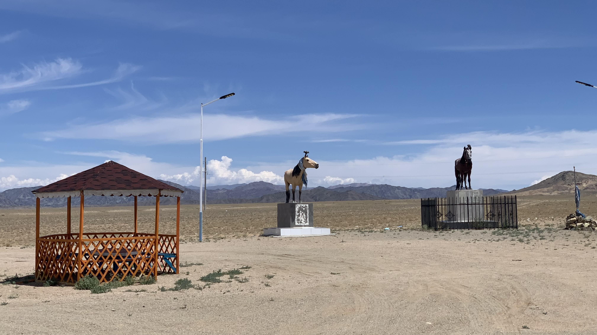
來到休息區，此處雕像頗多，意義不明。
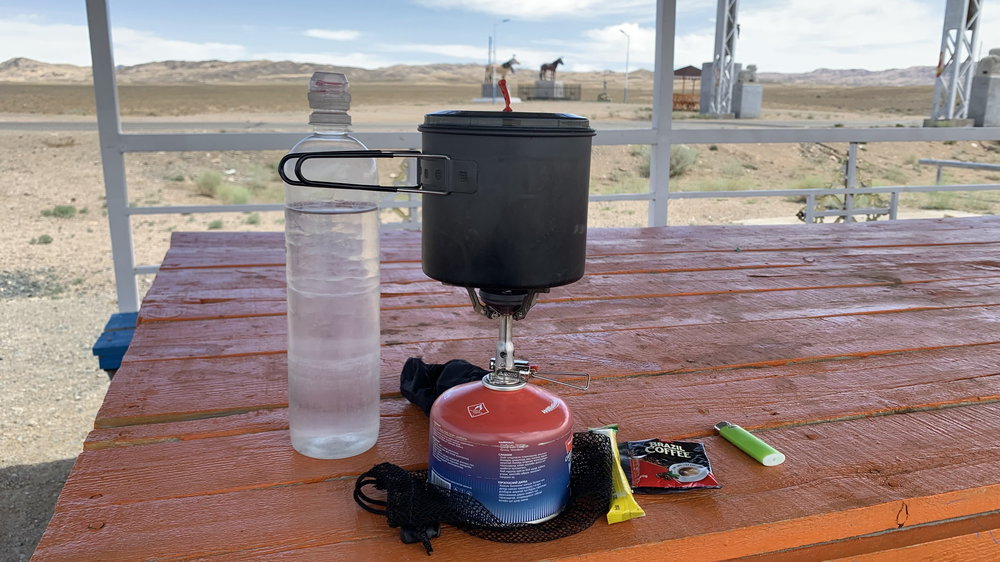
選了鐵皮涼亭坐下，開始煮咖啡。二十三號又被風吹倒了一次。鐵皮發出颱風天金屬浪板被吹翻前的聲響。
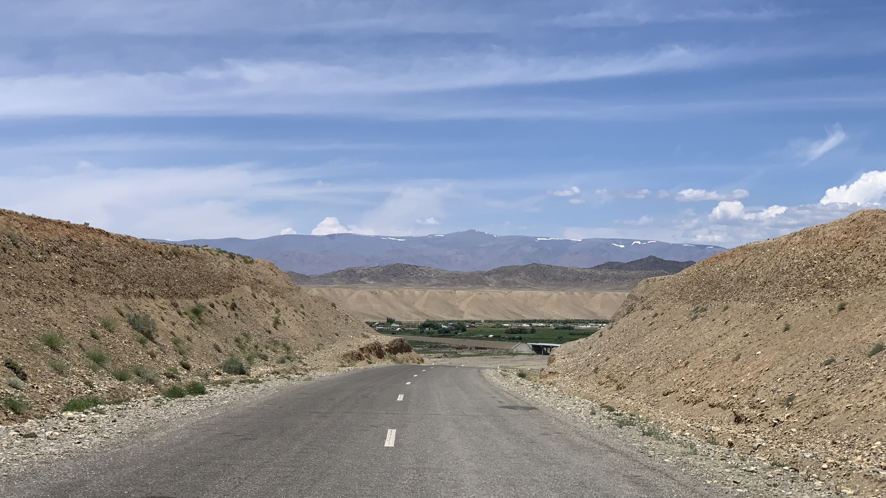
人類真的很奇妙，同樣的逆風，同樣的沙漠和上坡，因為有了盡頭，似乎都可以接受。爬上陡坡，眼前出現一片綠洲。
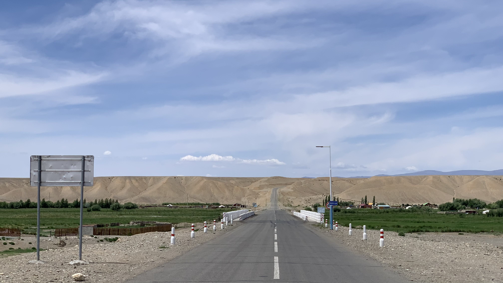
眼前場景足夠震撼，那個貼在黃沙上興建的柏油路陡峭的不合理。
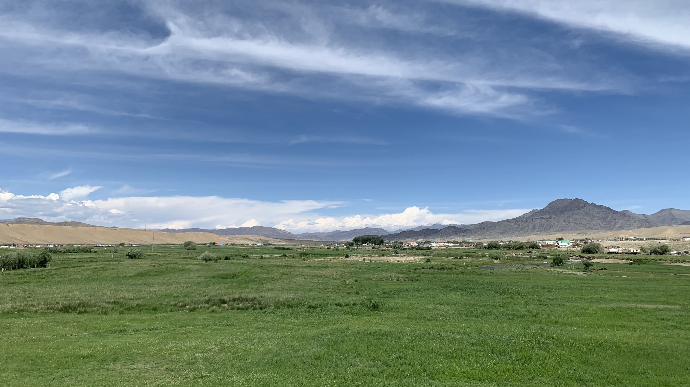
上坡前停下來積蓄腳力，觀察眼前的城鎮。接近口岸的綠洲聚落應該很有發展才是，看來新疆並不像內蒙那樣與蒙古有密切往來。
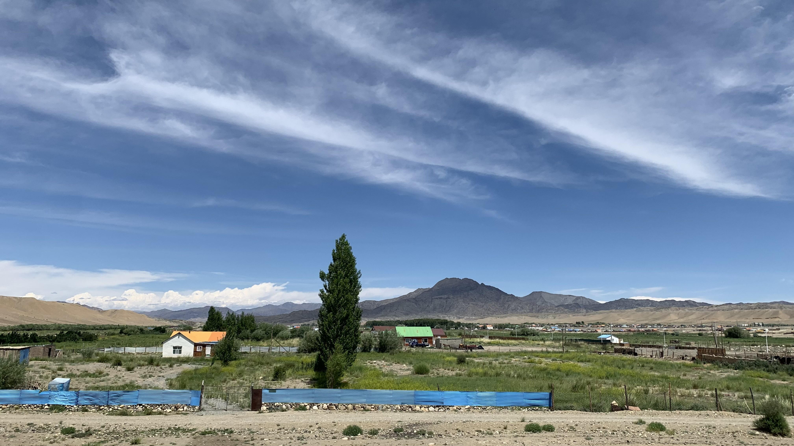
不過此處建築也與先前看到的不同，大部分是三角形屋頂搭配方窗的鐵皮屋頂矮房。
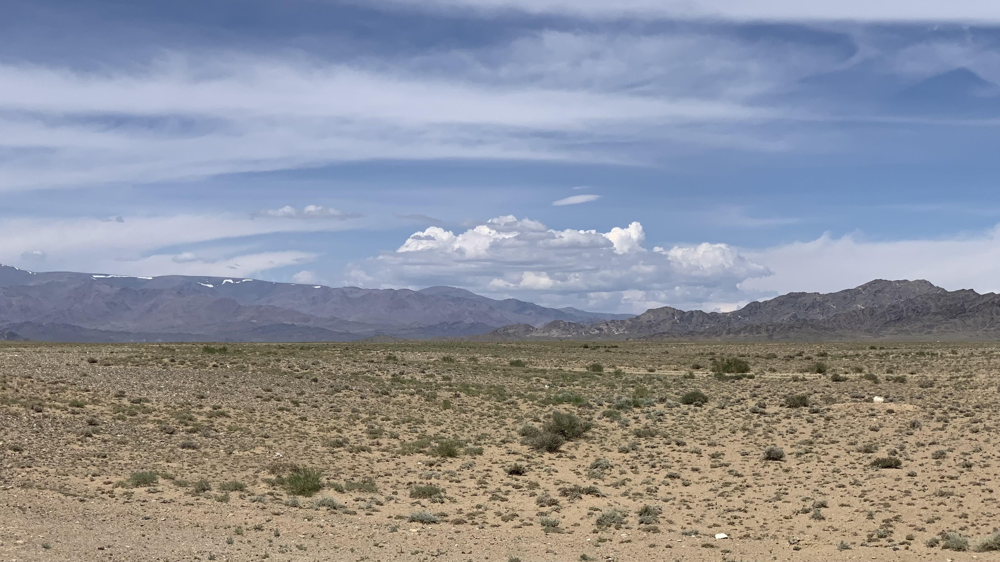
下午熱得受不了，看著遠處山頭的積雪降溫。
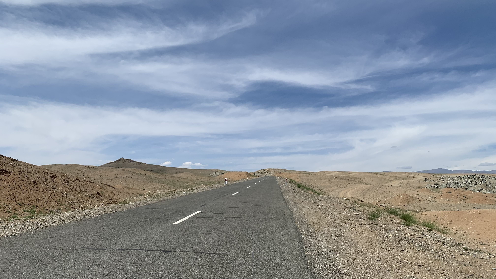
風大站不了太久，趕緊繼續爬坡，在騎不動之前多推進一點。
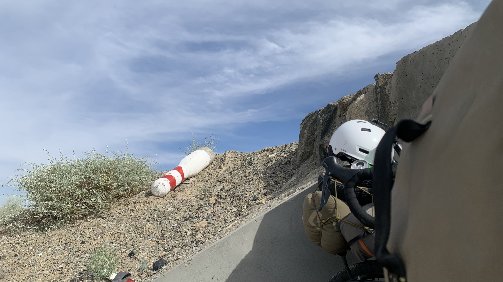
真的就是一點，在風中找了個涵洞躲下去。高度不夠遮擋站著的我。柱子也被撞掉一根，感覺上不太吉利。
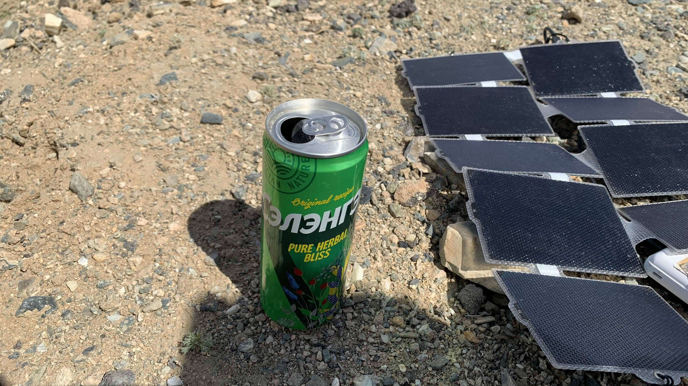
現在風還太大，沒辦法搭帳篷，坐在最後一個涵洞打開草本汽水喝。最後幾週買的飲料都是一路上接受過的善意，有些味道留下來，偶爾想回味時就自己買來帶在身邊，感到困難時拿來喝。
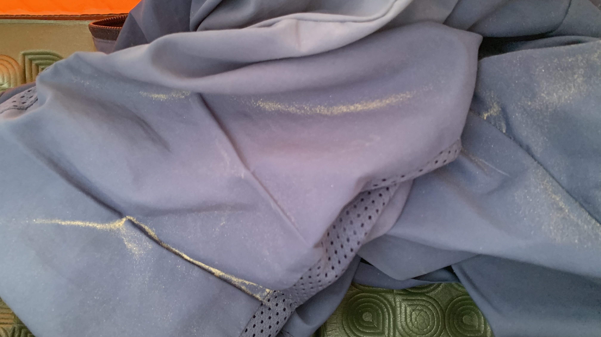
地表全是鬆軟的黃沙，從各處搬了許多大石塊仍然壓不住營釘。仔細觀察石頭形狀，盡量貼合縫隙，搭好帳篷躺到睡墊上，黃沙仍然不斷噴進來，每隔幾秒就要抖掉身上的沙土。身上又黏又臭。
沒意外的話，今晚會是在蒙古的倒數第二個夜晚。按理說明天應該就能抵達口岸，但簽證還有三天，下一次再來蒙古不知道會是什麼時候。在離開之前沉澱一下，有許多仍漂浮著的思想和情緒，大概需要一段安全的時間和空間吸收。
已經十一點半了，還是睡不著，腦中出現台灣山中深沉的綠色、濕氣、在雨霧裡騎車的感覺。
約莫是兩年前的某個晚上，當時走到陽台看著淡水河的景象，風是夏天的感覺。眼前突然出現河水底部浮起的那層砂土，既非沉在水底，也沒有被水流沖走，只是隨著上方的波浪輕微晃動。也許是聽到什麼，我回頭往身後月亮方向的天空看了一眼，再一回頭，眼前出現一個沒有邊際的巨大圓形玻璃魚缸。面對著玻璃魚缸，我大大地吸了一口氣。那是好久以來，終於吸到的第一口空氣。
當然所謂吸了一口氣的我也並非是身體上的我，只不過我也並不想使用「靈魂」這樣的說法，此刻想來也許將那個我稱之為精神的我更恰當一些。
現在的精神的我正處於從兩千八百公尺沖下山的溪流那樣。
今日花費：0元